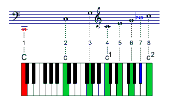
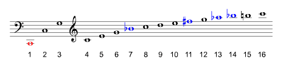
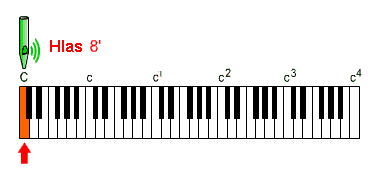
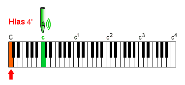
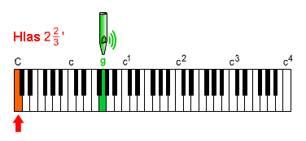
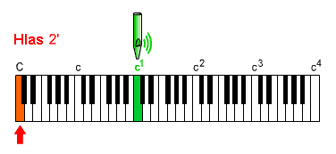
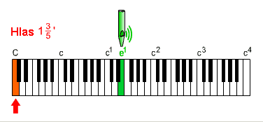
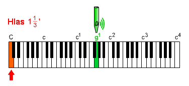
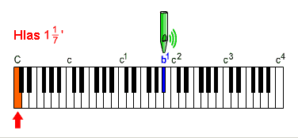
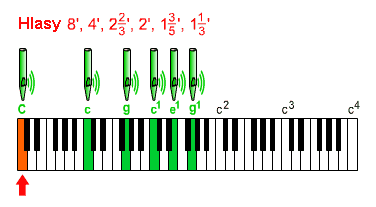

Hlasy vedlejší (pomocné, alikvoty) jsou zjednodušenì øeèeno ty hlasy, u kterıch se po stisku klávesy na klaviatuøe ozve tón s jinım názvem, ne� má klávesa. Nejedná se navíc jen o transpozici tónu o jednu èi nìkolik oktáv (jako u základních hlasù), ale o rozdíl v kombinacích jinıch intervalù (tercií, kvint, septim a pøípadnì oktáv). Tak napø. stisk klávesy c1 zpùsobí v závislosti na zvoleném vedlejším hlase ozev tónu g, e èi b, které navíc mohou pocházet z rùznıch oktáv. Vedlejší hlas vìtšinou poznáme snadno – v oznaèení hlasu se ve stopové délce vyskytuje zlomek, napø. 22/3' (8/3'), 2/5', 11/7' (8/7') atd. Proè se tyto hlasy ve varhanách pou�ívají, kdy� vıškou tónu na první pohled vùbec neodpovídají klaviatuøe? Opravdu samostatné pou�ití takového hlasu vıznam nemá, ten vynikne teprve pøi spojení s hlasem v základní poloze. Vıstavba alikvotù (pomocnıch hlasù) sleduje ve správnì vybudovanıch varhanách harmonickı (alikvotní) rozvoj zvuku, pou�ití více základních a pomocnıch hlasù souèasnì vede k jejich sluchovému spojení a díky rùznım kombinacím zvıraznìní urèitıch harmonickıch k velkému poètu zvukovıch barev a hlasitosti nástroje. Tohoto efektu nelze docílit spojením hlasù v pouze základní poloze, ty sice také obsahují kromì shodné základní frekvence i rùznı pomìr harmonickıch, ty jsou však vùèi základní frekvenci pøíliš malé. Barva zvuku i hlasitost se v tomto pøípadì také mìní, vıslednı efekt je však málo vıraznı. |
Pøipomeòme si nejprve základ harmonického rozvoje zvuku (podrobnìjší popis v kapitole o akustice). Na obrázku je malá èást harmonické øady pro tón velké C, zobrazeno je poøadí harmonickıch a jejich vyjádøení v klávesách klaviatury a notách. Tón velké C je tón základní, kterı rozhoduje o vıšce tónu, kterı slyšíme. Ostatní harmonické u� z pohledu sluchu rozhodují jen o zabarvení zvuku. Druhá harmonická je od základního tónu vzdálená o oktávu (tón malé c). Všimnìme si, �e ve velké oktávì �ádnı jinı alikvot není. Tøetí harmonická je kvinta o oktávu vıše od základního tónu (g v malé oktávì), ètvrtı pak další oktáva (c1 – o dvì oktávy nad základním tónem). Pátá a šestá jsou tercie a kvinta z následující oktávy. Sedmá harmonická je pøibli�nì septima v této oktávì (jen pøibli�nì, skuteèná frekvence se od tónu b1 mírnì liší a v notách èi klaviatuøe tak nejde pøímo vyznaèit). Osmá harmonická je opìt oktáva, tentokrát u� tøetí od základního tónu, devátá nona atd. V rozvoji bychom tak mohli pokraèovat dále (viz napø. zobrazení v notách na dalším obrázku) ne však do nekoneèna, vıznam mají jen ty harmonické, které ještì slyšíme tj. jejich� frekvence nepøesáhne cca 16kHz, pro tón velké C by to byla pøibli�nì 250. harmonická.  Znalost vıznamu alikvotù a zpùsobu oznaèování základních hlasù nám pomù�e snáze pochopit princip znaèení pomocnıch hlasù. |
Zaènìme opìt od základního tónu, tentokrát budeme
vazbu klaviatury a znìjícího tónu ilustrovat na tónu velké C: |

Tón shodnı se stisknutou klávesou se ozve jen u hlasu v základní – 8’ poloze, u nìho� slyšíme pøesnì to, co hrajeme. Pokud bychom chtìli slyšet samostatnì druhou harmonickou (druhı alikvot) tónu velké C, pou�ili bychom ètyøstopovı hlas 4’. V nìm hrané tóny znìjí právì o oktávu vıše, pøi stisku velkého C se tak ozve malé c: |

Tøetí harmonická u� není vùèi základnímu tónu v oktávovém
intervalu. Pøi pou�ití samostatného hlasu tak u� nevystaèíme se základními
hlasy, musíme pou�ít hlas pomocnı v kvintové poloze. Vyjdeme-li ze základního
tónu v poloze 8’, má kvinta v druhé oktávì délku 22/3'
, pou�ijeme-li tento hlas samostatnì, po stisku velkého C
se ozve malé g, co� je tøetí harmonickı tón velkého C: |

Ètvrtı alivot je opìt oktáva (tentokráte zdvojená)
od základního tónu, abychom ji získali samostatnì, pou�ijeme hlas o dvì
oktávy vıše nad základním, tedy dvoustopovı (2’): |

Pátım alikvotem je tercie, pøi odvození z osmistopového
základu bude mít délku 13/5'.
Opìt po stisku klávesy velkého C se ozve pøíslušnı tón,
tentokrát jednoèárkované e1: |

Následující šestı alikvot má kvintovı charakter,
délka základní píš�aly bude 11/3': |

| Sedmı alikvot je septima, délka píš�al bude 11/7'’: |

Obdobnì bychom mohli pokraèovat i u dalších alikvotù. Všimnìme si, �e èást alikvotù tvoøí základní hlasy (ty, jejich� vzdálenost od základního tónu jsou násobky oktáv). Všechny ostatní jsou hlasy vedlejší – tøetí je kvinta 22/3', pátı tercie 13/5', šestá další kvinta 11/3', sedmı septima 11/7'’… Na pøedchozích obrázcích byly alikvoty pou�ity samostatnì. Jejich skuteèné vyu�ití je však jiné. Ka�dá píš�ala vydává kromì základního tónu ještì celou øadu tónù harmonickıch, díky jejich rùznému zastoupení se jednotlivé hlasy od sebe liší barvou zvuku. Stiskneme-li jedinou klávesu pøi zapnutém jednom hlase v základní poloze, zní tak se základním tónem i všechny alikvoty. Pou�itím (pøidáváním èi ubíráním) pomocnıch (alikvotních) hlasù mù�e varhaník nìkteré harmonické zvıraznit a úplnì tak zmìnit vıslednı zvuk. Na obrázku je situace pøi stisku klávesy velkého C pøi souèasnì zapnutém hlasu v základní poloze a všech vıše popsanıch alikvotech: |

V pøíkladech bylo uvedeno znaèení jen nìkolika alikvotù (dvou kvint, tercie a septimy) získanıch z osmistopového základu. Skuteènıch alikvotù je však mnohem více, mohou bıt toti� odvozeny od rùzného základu. U všech pomocnıch (alikvotních) hlasù se v oznaèení délky vyskytují zlomky. Velmi jednoduše lze rozlišit polohu hlasu podle èísla ve jmenovateli zlomku – u kvinty je to trojka (tøetí harmonickı tón), u tercie pìtka (pátá harmonická), sedmièka u septimy a devítka u nony (viz vyznaèení harmonického rozvoje na obrázku v úvodu kapitoly). Znaèení kvintovıch hlasù bude mít ve jmenovateli zlomku 3:
|
| Základní hlas | 32' | 16' | 8' | 4' | 2' | 1' |
| Oznaèení kvintového hlasu | 10 2/3' | 5 1/3' | 2 2/3' | 1 1/3' | 2/3' | 1/3' |
| 32/3' | 16/3' | 8/3' | 4/3' | 2/3' | 1/3' |
Jak je patrné z tabulky, mù�eme se setkat se znaèením ve formì nevlastních zlomkù (druhı øádek tabulky – èitatel je u nich vìtší ne� jmenovatel) nebo se znaèením ve formì celého èísla plus vlastního zlomku. Ze znaèení ve formì nevlastních zlomkù je pøímo jednoduše patrná délka základu, ze kterého je pøíslušnı alikvot odvozen, u druhého znaèení si jej musíme dopoèítat (nebo se vazbu na základní tón nauèit…). Délky píš�al jednotlivıch kvint získáme nejjednodušeji dìlením délky základu tøemi, tak�e kvinta pro 8 bude 8/3, kvinta pro 16 bude 16/3 atd. Z tabulky lze vyèíst i mnoho jinıch souvislostí – napø. �e tøetí harmonickou ètyøstopového hlasu lze zvıraznit hlasem v poloze 11/3', kterı zvırazní rovnì� šestou harmonickou osmistopového hlasu, je toti� jeho druhou v poøadí kvintou atd.). Kromì kvintovıch hlasù se pou�ívají i hlasy terciové, vydávající zvuk o velkou tercii vıše, ne� je název stisknuté klávesy, septimové (o malou septimu vıše), a nonové (o velkou nonu vıše). Jejich znaèení shrnují následující tabulky: |
Pátá harmonická - tercie:
| Základní hlas | 32' | 16' | 8' | 4' | 2' | 1' |
| Oznaèení hlasu v terciové poloze | 6 2/5' | 3 1/5' | 1 3/5' | 4/5' | 2/5' | 1/5' |
| 32/5' | 16/5' | 8/5' | 4/5' | 2/5' | 1/5' |
Sedmá harmonická - septima:
| Základní hlas | 32' | 16' | 8' | 4' | 2' | 1' |
| Oznaèení hlasu v septimové poloze | 4 4/7' | 2 2/7' | 1 1/7' | 4/7' | 2/7' | 1/7' |
| 32/7' | 16/7' | 8/7' | 4/7' | 2/7' | 1/7' |
Devátá harmonická - nona:
| Základní hlas | 32' | 16' | 8' | 4' | 2' | 1' |
| Oznaèení nonového hlasu | 3 5/9' | 1 7/9' | 8/9' | 4/9' | 2/9' | 1/9' |
| 32/9' | 16/9' | 8/9' | 4/9' | 2/9' | 1/9' |
V dalších kapitolách je rozebráno oznaèování hlavních a smíšenıch hlasù. S problematikou souvisí rovnì� úvod do akustiky, princip vzniku zvuku v píš�alách retnıch a jazıèkovıch, stavba píš�al, menzury, intonace a ladìní. |
Poznámka: Tato stránka je souèástí Anatomie varhan ®, © Ing. Petr Bernat. Animace © Konrad Zacharski